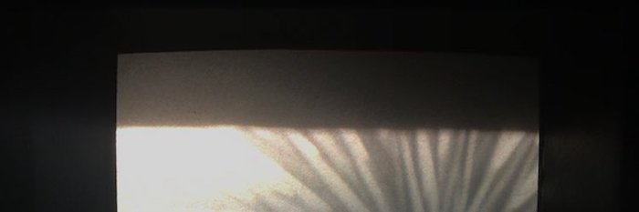

Film history and practices, film laboratories, and audiovisual collections and archives.
Dispersed Renderings: A Salon with Patricia Ledesma Villon (March 14, 2023): https://canyoncinema.com/2023/02/21/3-14-2023-dispersed-renderings-a-salon-with-patricia-ledesma-villon/(opens in a new tab)